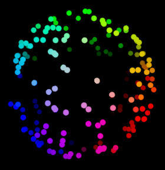
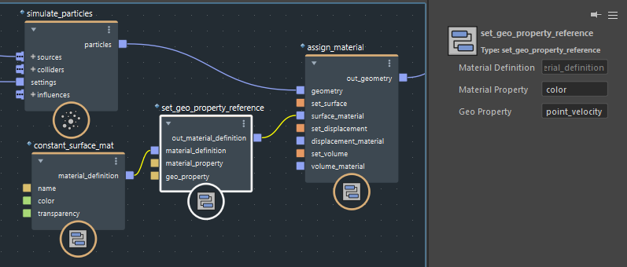

您可以使用几何对象的特性来控制材质定义特性。例如，您可以出于诊断目的将材质的 base_ color 设置为粒子系统的 point_velocity，或者使用自定义几何特性驱动任意数量的材质特性以获得艺术效果。

此过程仅适用于材质定义。不支持引用的材质。
将材质定义（例如 standard_surface_mat 或 constant_surface_material）添加到图表。
将其输出连接到 set_geo_property_reference 节点的 material_definition 端口。
将 material_property 设置为材质特性的名称，以控制 base_color 等。
将 geo_property 设置为几何对象的特性的名称，以用于控制材质特性。
将 set_geo_property_reference 的输出连接到 assign_material 节点的材质输入之一。
将几何对象连接到 assign_material 节点的 geometry 端口。将结果输出到场景，或者在图表中对其做进一步的修改。
